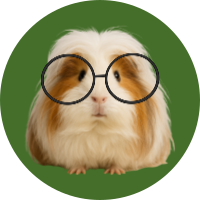
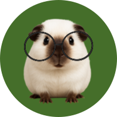

큰 소리로 반복적으로 꾸잉꾸잉
가장 기본적인 의사표현. 주로 건초나 물이 없을 때 그러며 야채가 부스럭거리는 소리만 들려도 저 소리를 내며 달라고 하기도 한다.작은 소리로 구구구
편안함, 안정됨의 표현이다. 주로 쓰다듬을 때 자주 들을 수 있다.

큰 소리로 꾸익 소리지르기
첫 번째와 달리 반복적으로 하지 않는데, 공포, 고통, 외로움의 표현이다.작은 소리로 꾸르륵거리는 것
거부의 표현이다.이를 갈 때 드드드드
상대를 경고하거나 화났을 때.팝콘
순간적으로 뛰어오르며 짧고 빠르게 '푸르르' 소리를 내는 것이다.주로 어린 기니피그들에게 많이 보인다. 기쁨 또는 흥분의 표현이다.